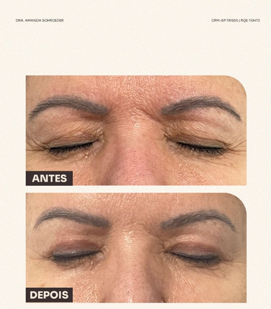

“Recomendo muitíssimo... minha mãe e meu pai amaram o atendimento.”Thaïs Chauvell
Blefaroplastia em Pinheiros
Blefaroplastia para descansar o olhar sem mudar sua expressão.
A avaliação diferencia excesso de pele, bolsas, sobrancelha baixa, olheiras e qualidade da pele para indicar o que realmente pode deixar o olhar mais leve, com naturalidade e segurança.
Atendimento na Clínica LIV Faria Lima, em Pinheiros. Consulta presencial, teleconsulta em casos selecionados e preparo pré-operatório integrado quando indicado.

MédicaDra. Amanda Schroeder
RegistroCRM-SP 191605 · RQE 110472
FormaçãoUNICAMP · HC-UNICAMP · Einstein
LocalizaçãoPinheiros · perto da Faria Lima
Avaliações no Google
★★★★★
Depoimentos destacam acolhimento, competência técnica e cuidado humano.
“Grande conhecimento técnico, atencioso e empático durante a consulta.”Marina Silva
“Experiência, profissionalismo e um acolhimento humano que faz toda a diferença.”Raphaela Garofo
Quando considerar
Quando a queixa está nas pálpebras — e quando não está.
Nem todo olhar cansado se resolve com blefaroplastia. A consulta avalia pálpebras, sobrancelhas, sulcos, pele e função ocular para evitar indicação excessiva ou resultado artificial.
Pálpebra superior
Excesso de pele, dobra pesada, sensação de olhar fechado ou dificuldade para maquiar a região.
Pálpebra inferior
Bolsas, flacidez e transição com a olheira precisam ser avaliadas com cautela para evitar olhar arredondado ou artificial.
Olhar como conjunto
Nem todo incômodo é resolvido apenas na pálpebra. A avaliação considera sobrancelhas, testa, bochechas e expressão.
Quando pode não ser indicado
Nem toda queixa no olhar é blefaroplastia.
A cirurgia pode não ser a melhor solução quando a queixa principal vem de sobrancelha baixa, olheira pigmentada, sulco profundo, olho seco importante ou flacidez global da face. A consulta serve para separar essas causas antes de indicar cirurgia.
Olhar cansado
Blefaroplastia, sobrancelha baixa ou tratamento de olheiras?
Nem todo incômodo no olhar vem das pálpebras. A avaliação identifica se a queixa está no excesso de pele, bolsas, posição da sobrancelha, sulco da olheira ou qualidade da pele.
Excesso de pele
Quando a dobra da pálpebra pesa, fecha o olhar ou dificulta maquiagem, a blefaroplastia pode ser considerada.
Bolsas e olheiras
Bolsas podem ter indicação cirúrgica; pigmentação e sulcos podem exigir outras abordagens ou associações.
Sobrancelha baixa
Quando a sobrancelha pesa sobre a pálpebra, tratar apenas pele pode não resolver a causa principal.

Consulta presencial
1
2
3
4
O olhar é avaliado em movimento.
Na consulta, a Dra. Amanda analisa pele, bolsas, assimetrias, fechamento dos olhos, histórico de olho seco, cicatrização e expectativa estética para preservar formato e expressão.
Diagnóstico do olhar
Pálpebras, bolsas, sobrancelhas, olheiras e assimetrias.
Indicação
Definição do que deve ser tratado e do que deve ser preservado.
Riscos
Discussão de cicatriz, assimetria, olho seco e recuperação.
Preparo
Organização de exames, fotos, orçamento e próximos passos.
IndicaçãoSe blefaroplastia faz sentido para seu caso.
AlternativasO que pode ser feito além da cirurgia.
RecuperaçãoTempo esperado, edema, roxos e cuidados.
Próximos passosExames, orçamento e preparo.
Quem conduz sua avaliação
Conhecer a abordagem
Dra. Amanda Schroeder, cirurgiã plástica.
Cirurgiã plástica, CRM-SP 191605 e RQE 110472, com formação pela UNICAMP, a Dra. Amanda avalia face, olhar e pescoço como conjunto. A indicação considera anatomia, expressão, pele, cicatrizes possíveis e expectativas reais — para decidir com critério o que operar, tratar de forma complementar ou acompanhar.
Clínica LIV Faria Lima
Como chegarAtendimento em Pinheiros, com privacidade e jornada organizada.
As consultas acontecem na Clínica LIV Faria Lima, em Pinheiros, próxima à Estação Pinheiros do metrô e com estacionamento pago no local. A jornada pode integrar consulta, exames, preparo clínico e avaliação cardiológica pré-operatória quando indicada.
Segurança pré-operatória
Entender preparo
Planejamento cirúrgico com visão clínica integrada.
Quando indicada, a avaliação cardiológica pré-operatória pode ser organizada na própria Clínica LIV com o Dr. Daniel Added, cardiologista formado pela USP e médico do InCor, CRM-SP 199104. Isso facilita exames, análise de risco e comunicação entre os profissionais envolvidos.
Expectativa realista
Naturalidade é deixar o olhar descansado, não diferente.
A meta é reduzir peso, bolsas e aspecto de cansaço preservando expressão própria. Edema e roxos podem ocorrer no início; o refinamento aparece progressivamente nas semanas seguintes.

Exemplo educativo
Resultados variam conforme anatomia, pele, cicatrização e indicação. A imagem não representa promessa de resultado individual.

Segurança e técnica
A cirurgia é planejada com exame presencial, documentação fotográfica e orientação clara de preparo e recuperação.
Todo procedimento cirúrgico tem riscos. A indicação deve ser individualizada em consulta médica, sem promessa de resultado.
Conteúdos da Dra. Amanda
Conteúdos para entender pálpebras, olhar e naturalidade.
Materiais úteis para quem percebe olhar cansado, excesso de pele ou dúvida entre blefaroplastia e outras abordagens.
Blefaroplastia em vídeo
Um ponto de partida direto para entender a cirurgia das pálpebras.
Reel no InstagramBlefaroplastia
Conteúdo específico sobre indicação e resultado esperado.
Post no InstagramLifting de supercíliosAjuda a diferenciar pálpebra pesada de sobrancelha baixa.
Reel no InstagramOlhar e planejamentoComplementa a avaliação do conjunto do olhar.
Post no InstagramDúvidas sobre pálpebrasMaterial de apoio para quem ainda está comparando opções.
Post no InstagramQuando indicarAjuda a alinhar queixa, anatomia e expectativa realista.
Post no InstagramPálpebras e naturalidadeReforça cuidado para evitar resultado artificial.
Os conteúdos do Instagram complementam a orientação, mas não substituem consulta médica presencial. Alguns vídeos podem abrir controles próprios do Instagram conforme o navegador.
FAQ
Dúvidas frequentes sobre blefaroplastia.
Como a segurança é planejada antes da cirurgia?
Nos procedimentos cirúrgicos, o preparo inclui avaliação clínica, exames pré-operatórios e análise dos fatores de risco. Quando indicada, a avaliação cardiológica pré-operatória pode ser integrada à jornada na própria Clínica LIV com o Dr. Daniel Added, cardiologista formado pela USP e médico do InCor, CRM-SP 199104.
Blefaroplastia trata olheiras?
Nem sempre. A cirurgia trata principalmente excesso de pele, bolsas e flacidez das pálpebras. Olheira pigmentada, sulco profundo ou qualidade de pele podem exigir outras abordagens.
A blefaroplastia muda o formato dos olhos?
Esse não é o objetivo. O planejamento busca aliviar o aspecto de cansaço preservando expressão, formato do olhar e características individuais.
Pálpebra superior e inferior são operadas juntas?
Podem ser, mas não obrigatoriamente. A decisão depende da queixa, do exame físico, da função ocular e da segurança da indicação.
E se minha sobrancelha estiver baixa?
A sobrancelha baixa pode simular excesso de pele na pálpebra. Por isso a consulta avalia pálpebras, sobrancelha e testa como conjunto.
Quanto tempo leva para o olhar desinchar?
Edema e roxos variam de pessoa para pessoa. A recuperação social costuma ser progressiva e as orientações são individualizadas em consulta.
Primeiro contato
Como funciona ao solicitar uma avaliação.
Ao enviar uma mensagem, a equipe entende o que você deseja avaliar, orienta o melhor formato de consulta e informa disponibilidade, valores, nota fiscal e próximos passos com discrição e clareza.
Você conta o que deseja avaliar
A equipe entende sua queixa, sua prioridade e o procedimento de interesse.
A equipe orienta o caminho
Você recebe informações sobre consulta presencial, teleconsulta inicial em casos selecionados, agenda e valores.
A avaliação define a indicação
Na consulta, a Dra. Amanda avalia técnica, limites, segurança, recuperação e próximos passos.
Quer entender se a blefaroplastia é indicada no seu caso?
Envie uma mensagem para avaliar excesso de pele, bolsas ou aparência cansada e receber orientação sobre consulta, disponibilidade, valores e próximos passos.